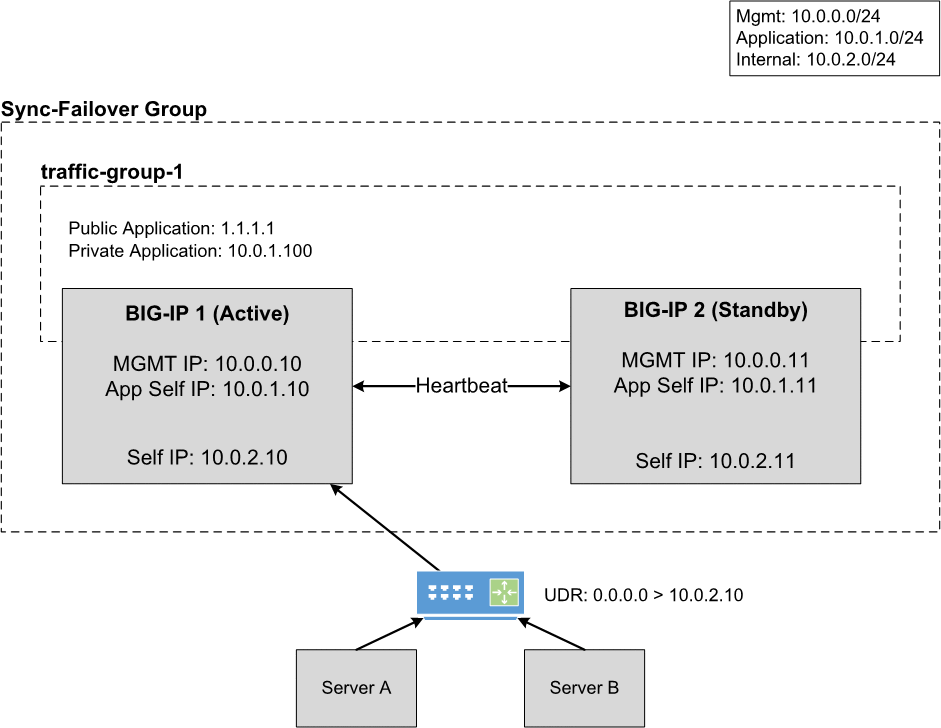

Cloud Failover Extension Overview¶
The F5 BIG-IP Cloud Failover Extension (CFE) is an iControl LX extension that provides L3 failover functionality in cloud environments, effectively replacing Gratuitous ARP (GARP). CFE uses a declarative model, meaning you provide a JSON declaration using a single REST API call rather than a set of imperative commands. The declaration then configures the BIG-IP system with all the required settings for cloud failover. At a high level, to use CFE, you will download the RPM from GitHub, upload the RPM to BIG-IP, tag or label your cloud resources, and then Post your declaration.
{kind=link}
How does it work?¶
In the event of a failover between BIG-IP systems, BIG-IP fails a traffic group over, which runs the /config/failover/tgactive script. CFE updates that file during any configuration request to ensure it triggers failover by calling the Cloud Failover /trigger API. During a failover event, CFE then moves or updates cloud resources as described below:
- Failover IP(s): The extension updates IP configurations between NICs, updates EIP/private IP associations, and updates forwarding rule target instances.
- Failover Routes: The extension updates Azure User-Defined Routes (UDR), AWS route tables, and GCP forwarding rule targets to point to a self IP address of the active BIG-IP device.
- Failback: The extension reverts to using the designated primary BIG-IP when it becomes active again.
The diagram below shows a typical failover scenario for an active/standby pair of BIG-IPs in a cloud environment. To see how Cloud Failover Extension works in specific cloud environments, see the sections for AWS, Azure, and Google Cloud.
{kind=link}

Why use Cloud Failover Extension?¶
Using Cloud Failover Extension has three main benefits:
- Standardization: Failover patterns will look similar across all clouds.
- Portability: You can leverage a variety of methods, including cloud-native templates, Terraform, and Ansible, to install and run CFE.
- Lifecycle and Supportability: You can upgrade BIG-IP without having to call F5 support to fix failover.
Note
To provide feedback on Cloud Failover Extension or this documentation, you can file a GitHub Issue.